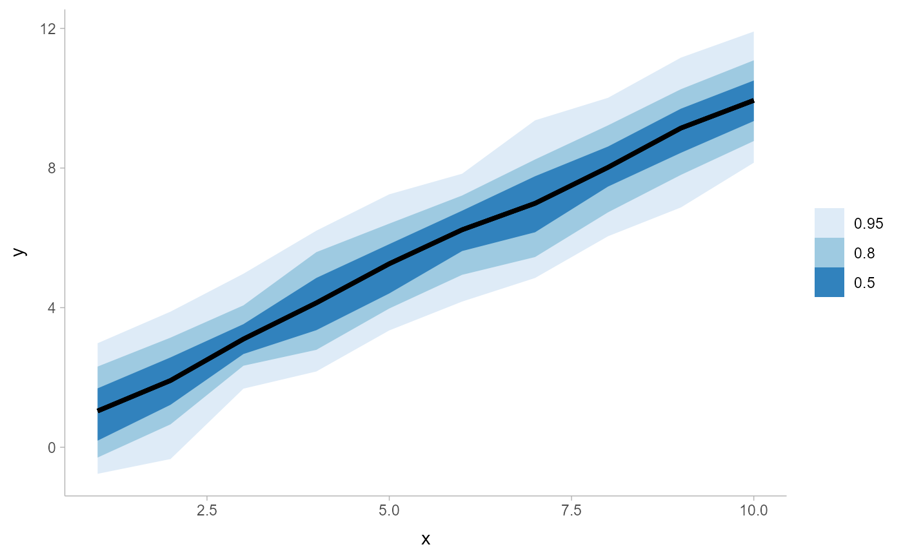

A combination of geom_line() and geom_ribbon() with default aesthetics
designed for use with output from point_interval().
Usage
geom_lineribbon(
mapping = NULL,
data = NULL,
stat = "identity",
position = "identity",
...,
step = FALSE,
orientation = NA,
na.rm = FALSE,
show.legend = NA,
inherit.aes = TRUE
)Arguments
- mapping
Set of aesthetic mappings created by
aes(). If specified andinherit.aes = TRUE(the default), it is combined with the default mapping at the top level of the plot. You must supplymappingif there is no plot mapping.- data
The data to be displayed in this layer. There are three options:
If
NULL, the default, the data is inherited from the plot data as specified in the call toggplot().A
data.frame, or other object, will override the plot data. All objects will be fortified to produce a data frame. Seefortify()for which variables will be created.A
functionwill be called with a single argument, the plot data. The return value must be adata.frame, and will be used as the layer data. Afunctioncan be created from aformula(e.g.~ head(.x, 10)).- stat
The statistical transformation to use on the data for this layer, either as a
ggprotoGeomsubclass or as a string naming the stat stripped of thestat_prefix (e.g."count"rather than"stat_count")- position
Position adjustment, either as a string naming the adjustment (e.g.
"jitter"to useposition_jitter), or the result of a call to a position adjustment function. Use the latter if you need to change the settings of the adjustment.- ...
Other arguments passed to
layer(). These are often aesthetics, used to set an aesthetic to a fixed value, likecolour = "red"orlinewidth = 3(see Aesthetics, below). They may also be parameters to the paired geom/stat.- step
Should the line/ribbon be drawn as a step function? One of:
FALSE(default): do not draw as a step function."mid"(orTRUE): draw steps midway between adjacent x values."hv": draw horizontal-then-vertical steps."vh": draw as vertical-then-horizontal steps.
TRUEis an alias for"mid"because for a step function with ribbons,"mid"is probably what you want (for the other two step approaches the ribbons at either the very first or very last x value will not be visible).- orientation
Whether this geom is drawn horizontally or vertically. One of:
NA(default): automatically detect the orientation based on how the aesthetics are assigned. Automatic detection works most of the time."horizontal"(or"y"): draw horizontally, using theyaesthetic to identify different groups. For each group, uses thex,xmin,xmax, andthicknessaesthetics to draw points, intervals, and slabs."vertical"(or"x"): draw vertically, using thexaesthetic to identify different groups. For each group, uses they,ymin,ymax, andthicknessaesthetics to draw points, intervals, and slabs.
For compatibility with the base ggplot naming scheme for
orientation,"x"can be used as an alias for"vertical"and"y"as an alias for"horizontal"(ggdist had anorientationparameter before base ggplot did, hence the discrepancy).- na.rm
If
FALSE, the default, missing values are removed with a warning. IfTRUE, missing values are silently removed.- show.legend
logical. Should this layer be included in the legends?
NA, the default, includes if any aesthetics are mapped.FALSEnever includes, andTRUEalways includes. It can also be a named logical vector to finely select the aesthetics to display.- inherit.aes
If
FALSE, overrides the default aesthetics, rather than combining with them. This is most useful for helper functions that define both data and aesthetics and shouldn't inherit behaviour from the default plot specification, e.g.borders().
Value
A ggplot2::Geom representing a combined line + multiple-ribbon geometry which can
be added to a ggplot() object.
Details
geom_lineribbon() is a combination of a geom_line() and geom_ribbon() designed for use
with output from point_interval(). This geom sets some default aesthetics equal to the .width
column generated by the point_interval() family of functions, making them
often more convenient than a vanilla geom_ribbon() + geom_line().
Specifically, geom_lineribbon() acts as if its default aesthetics are
aes(fill = forcats::fct_rev(ordered(.width))).
Aesthetics
The line+ribbon stats and geoms have a wide variety of aesthetics that control
the appearance of their two sub-geometries: the line and the ribbon.
Positional aesthetics
x: x position of the geometryy: y position of the geometry
Ribbon-specific aesthetics
xmin: Left edge of the ribbon sub-geometry (iforientation = "horizontal").xmax: Right edge of the ribbon sub-geometry (iforientation = "horizontal").ymin: Lower edge of the ribbon sub-geometry (iforientation = "vertical").ymax: Upper edge of the ribbon sub-geometry (iforientation = "vertical").order: The order in which ribbons are drawn. Ribbons with the smallest mean value oforderare drawn first (i.e., will be drawn below ribbons with larger mean values oforder). Iforderis not supplied togeom_lineribbon(),-abs(xmax - xmin)or-abs(ymax - ymax)(depending onorientation) is used, having the effect of drawing the widest (on average) ribbons on the bottom.stat_lineribbon()usesorder = after_stat(level)by default, causing the ribbons generated from the largest.widthto be drawn on the bottom.
Color aesthetics
colour: (orcolor) The color of the line sub-geometry.fill: The fill color of the ribbon sub-geometry.alpha: The opacity of the line and ribbon sub-geometries.fill_ramp: A secondary scale that modifies thefillscale to "ramp" to another color. Seescale_fill_ramp()for examples.
Line aesthetics
linewidth: Width of line. In ggplot2 < 3.4, was calledsize.linetype: Type of line (e.g.,"solid","dashed", etc)
Other aesthetics (these work as in standard geoms)
group
See examples of some of these aesthetics in action in vignette("lineribbon").
Learn more about the sub-geom override aesthetics (like interval_color) in the
scales documentation. Learn more about basic ggplot aesthetics in
vignette("ggplot2-specs").
See also
See stat_lineribbon() for a version that does summarizing of samples into points and intervals
within ggplot. See geom_pointinterval() for a similar geom intended
for point summaries and intervals. See geom_ribbon() and geom_line() for the geoms this is
based on.
Examples
library(dplyr)
library(ggplot2)
theme_set(theme_ggdist())
set.seed(12345)
tibble(
x = rep(1:10, 100),
y = rnorm(1000, x)
) %>%
group_by(x) %>%
median_qi(.width = c(.5, .8, .95)) %>%
ggplot(aes(x = x, y = y, ymin = .lower, ymax = .upper)) +
# automatically uses aes(fill = forcats::fct_rev(ordered(.width)))
geom_lineribbon() +
scale_fill_brewer()
